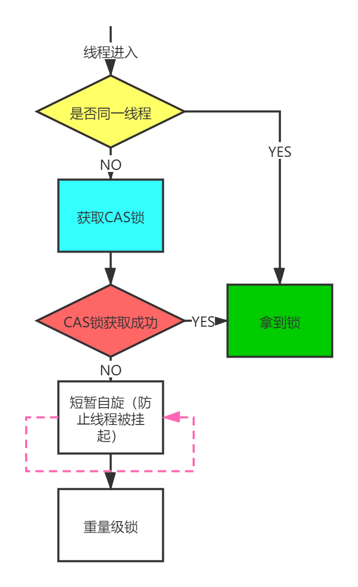
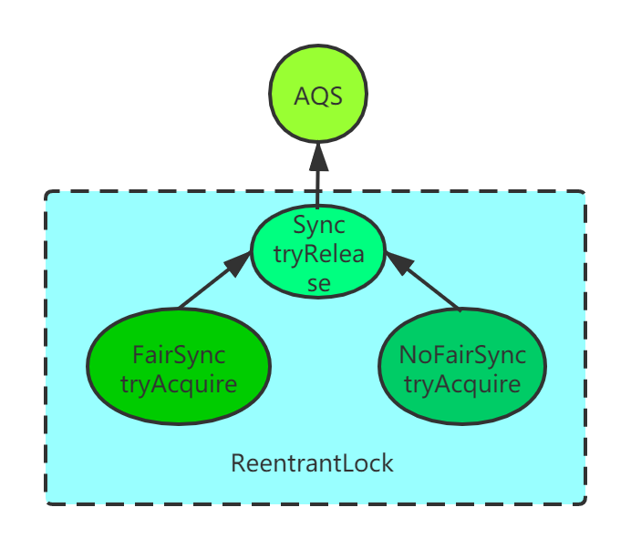
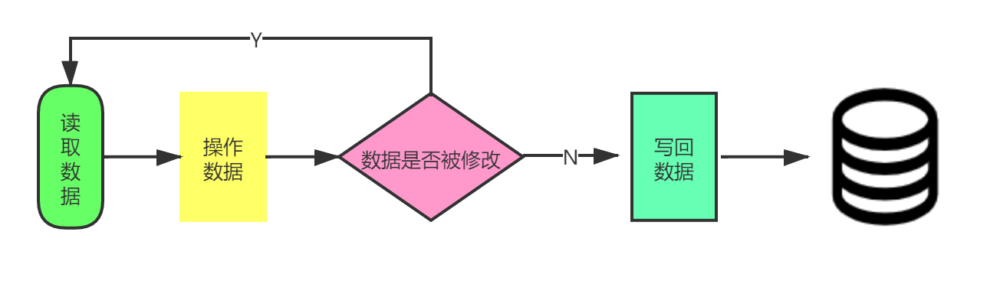

乐观锁和悲观锁一直都是面试中高频考察点，面试官也喜欢从这类问题去考察面试者的基本功。今天我们就来聊一下乐观锁和悲观锁的实现：CAS，Synchronized，ReentrantLock。
首先要对乐观锁和悲观锁，我们要有一定的概念：
- 悲观锁：悲观的认为只要不做正确的数据同步措施，它就一定会出问题
- 乐观锁：乐观的认为不需要去采取同步措施也不会出问题，如果出现问题，再去补救
那具体通过哪些方式去才取同步呢，在多线程中，同步机制主要分为以下四种，具体的区别以后再讲：
- 互斥量：为协调共同对一个共享资源的单独访问而设计的。
- 临界区：通过对多线程的串行化来访问公共资源或一段代码，速度快，适合控制数据访问。
- 临界量：为控制一个具有有限数量用户资源而设计。
- 事件：用来通知线程有一些事件已发生，从而启动后继任务的开始。
互斥（同步阻塞）悲观锁
互斥只是同步机制的其中一个手段，也是很常见的保障并发正确性的手段
我们知道传统的锁（如synchronized或者ReentrantLock）之所以被称为重量级锁，就是因为他使用操作系统互斥量来实现同步。
synchronized
synchronized能实现同步的基础：也是因为在java中，所有对象都可以作为锁。
具体表现为以下3种形式。
- 对于普通同步方法，锁是当前实例对象。
- 对于静态同步方法，锁是当前类的Class对象。
- 对于同步方法块，锁是Synchonized括号里配置的对象。
- 当一个线程试图访问同步代码块时，它首先必须得到锁，退出或抛出异常时必须释放锁。
synchronized是基于Monitor来实现同步的。当synchronized经过编译之后，会在同步块的前后分别形成monitorenter和monitorexit指令。
- 每个monitor维护着一个记录着拥有次数的计数器。未被拥有的monitor的该计数器为0
- 当执行进入monitorenter时，锁计数器就会+1，当执行到monitorexit,锁计数器就会-1。当锁计数器为0的时候，锁就会被释放
- synchronized不会出现自己死锁自己的情况，因为对于已经进入同步块的线程，synchronized锁是可重入的
- 在synchronized同步代码块执行完，会阻塞其他线程进入同步锁（排他锁）
- 对于
同步方法，synchronized同步方式是通过方法中的access_flags中设置ACC_SYNCHRONIZED标志来实现
并且，随着JDK6对synchronized进行了各种优化之后，有些情况下synchronized就并不那么重,JDK6中为了减少获得锁和释放锁带来的性能消耗而引入的偏向锁和轻量级锁。
针对synchronized获取锁的方式，JVM 使用了锁升级的优化方式，就是先使用偏向锁优先同一线程然后再次获取锁，如果失败，就升级为 CAS 轻量级锁，如果失败就会短暂自旋，防止线程被系统挂起。最后如果以上都失败就升级为重量级锁。并且锁只能向上升级，不能降级。

ReentrantLock
实现ReentrantLock的基础是AQS( AbstractQueuedSynchronizer 队列同步器)，AQS 有一个 state 标记位，值为1时表示有线程占用，其他线程需要进入到同步队列等待，同步队列是一个双向链表。
当获得锁需要等待某个条件时，会进入condition队列，进入等待队列的可以有很多个。当满足condition的条件的时候，线程就会重新竞争锁资源。
ReentrantLock 内部有公平锁和非公平锁两种实现，差别就在于新来的线程是否比已经在同步队列中的等待线程更早获得锁。

ReentrantLock里面有一个内部类Sync，Sync继承AQS（AbstractQueuedSynchronizer），添加锁和释放锁的大部分操作实际上都是在Sync中实现的。
它有公平锁FairSync和非公平锁NonfairSync两个子类。
ReentrantLock默认使用非公平锁，也可以通过构造器来显示的指定使用公平锁。
非阻塞同步（乐观锁）
CAS
CAS(Compare And Swap)是一种乐观锁的实现方式。是一种轻量级锁，JUC 中很多工具类的实现都是基于CAS的。CAS操作包含三个操作数—— 内存位置的值（V）、预期原值（A）和新值（B）。如果内存位置的值与预期原值相匹配，那么处理器会自动将该位置更新为新值。否则，处理器不做任何操作。无论哪种情况，它都会在CAS指令之前返回该位置的值。

但是这种情况，当数据被其他线程修改，就会出现一直循环。导致CPU资源一直消耗过多。除此之外CAS本身还存在ABA问题。即线程一读取数据A，线程二也读取数据A，线程二通过CAS比较发现数据是A，于是将A写回B，线程三读取B，线程三通过CAS比较发现数据是B没有被操作过，又将数据写回A，此时线程一读到的是A，会以为数据没有改变过。对于ABA问题，通过控制变量值的版本号（自增字段或者时间戳）来保证CAS的正确性。具体解决思路就是在变量前追加上版本号，每次变量更新的时候把版本号加一，那么A - B - A就会变成1A - 2B - 3A。
总结
今日偷懒，不写总结。

...
...